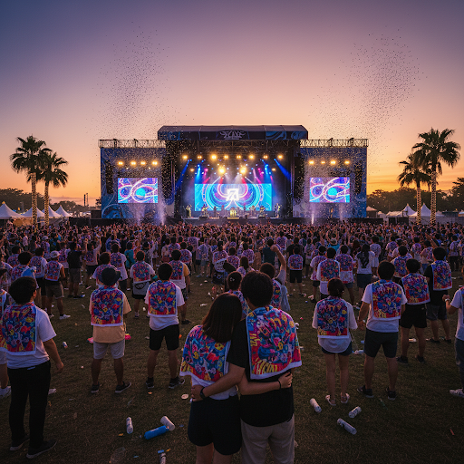
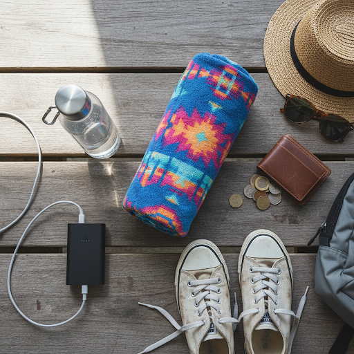

フェス・ライブ初心者向け完全ガイド｜持ち物・服装・YOASOBIライブの楽しみ方
フェスやライブへの参戦が決まったら、まずは準備から！
「何を持っていけばいい？」「どんな雰囲気なの？」という不安を解消できるよう、自身の経験をもとに、必要な持ち物やリアルな感想、さらにYOASOBIライブの楽しみ方を詳しくまとめました。

▼【ロッキン2026】知りたいこと別・攻略ガイド
※これだけ読めば当日の不安がゼロになります！
YOASOBIライブの楽しみ方【初心者向け】
YOASOBIのライブは、音楽だけでなく映像や照明の演出が非常に凝っているのが特徴です。最大限に楽しむためのポイントを深掘りします。
-
まずはチケット確認：現在はスマホアプリによる電子チケットが主流です。当日は会場周辺の電波が混み合うこともあるため、事前にアプリへの表示確認を済ませておきましょう。
-
グッズは事前購入がおすすめ：当日物販は数時間待ちになることも珍しくありません。「先行通信販売」を利用して事前に手に入れておくと、当日の体力を温存できます。
-
全力で楽しむ！：ikuraさんの透き通る歌声とAyaseさんの作り出す重厚なサウンドに身を任せましょう。一緒に歌うパートやクラップ（手拍子）など、会場が一つになる瞬間は圧巻です。
【予習用】YOASOBI 代表曲まとめ（リリース順）
ライブの予習に欠かせない、絶対に聴いておくべき代表曲をピックアップしました。
★まずはこれ！世界的ヒット曲「アイドル」
初めてのYOASOBIライブで気をつけること
「周りに迷惑をかけないかな？」と不安な方も多いですが、YOASOBIのファン層は幅広く、一人参戦の方も多いので安心してください。
-
撮影ルールの確認：YOASOBIは「写真はOKだけど動画はNG」といった独自のルールが設けられることが多いです。開演前の場内アナウンスや掲示を必ずチェックしましょう。
-
余裕を持った会場入り：大きな会場では、最寄り駅から座席にたどり着くまで30分以上かかることもあります。1時間前現地着を目指すと、トイレやグッズ確認もスムーズです。
-
スマホライトの演出：特定の曲で「ライトを点けて！」と合図があることがあります。周りが点け始めたら合わせてみましょう。
-
盛り上がりに迷ったら：公式のツアーTシャツを着ているベテラン勢の動きを参考にすれば間違いありません。
当日の流れを徹底解説
-
入場：チケット提示とともに、最近は転売対策で身分証明書の提示を求められることが増えています。免許証やマイナンバーカードは忘れずに。
-
座席確認：まずは自分の居場所を確認。荷物を置いて、ドリンクホルダーの位置などもチェックしておきましょう。
-
トイレ休憩：開演直前は数十分待ちになることも。男性トイレも意外と混むので、早め早めが鉄則です。
-
開演15分前：スマホを機内モードにするか電源を切る準備をし、タオルを肩にかけて待機。このワクワク感がたまりません！
- 開演！：あとは日常を忘れて音楽を楽しむだけです。
これだけは持っていけ！必須の持ち物リスト

-
チケット・スマホ・モバイルバッテリー：チケットが表示できないと入場できません。GPSや写真撮影で電池を消耗するため、モバイルバッテリーは「大容量」が推奨です。
-
現金（小銭）：キャッシュレス化が進んでいますが、自販機や一部の屋台で小銭が必要になるケースが多々あります。
-
身分証明書・保険証：本人確認に加え、万が一の体調不良に備えて必ず携帯しましょう。
-
履き慣れたスニーカー：1日1万歩以上歩くこともザラです。新しい靴より、絶対に「履き潰した靴」で行くべきです！
-
飲み物（500ml×2本以上）：特に夏場は現地での確保が困難になることも.
1本は凍らせて持っていくのが賢い方法です。
遠方から参加する場合は、早めにホテルや交通手段を確保しておくのがおすすめです。
特に千葉・蘇我周辺は、イベント発表と同時に宿が埋まり始めます。
楽天トラベルで空室状況を早めにチェックしておきましょう。


実際に行って感じた「フェスのリアル」
JAPAN JAMやROCK IN JAPAN、COUNTDOWN
JAPANなど、いくつかのフェスに参戦して痛感したのは、「ライブはスポーツである」ということです。
大好きなアーティストを前で見たい気持ちは分かりますが、人混みの中で無理をすると最後まで体力が持ちません。
時には後方の芝生で座りながら音を楽しむ。そんな「ゆとり」を持つことが、フェスを最後まで笑顔で終える秘訣です。
また、お目当て以外のアーティストをふらっと見に行けるのもフェスの醍醐味。そこで新しい音楽の出会いがあるはずです。しっかり準備をして、最高の思い出を作ってくださいね！